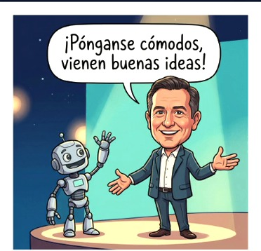
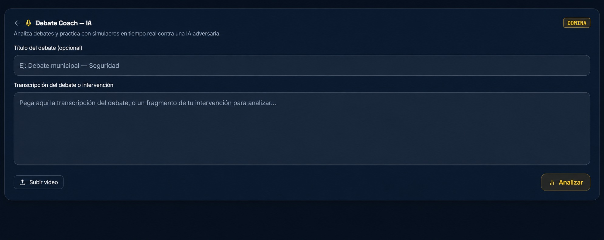
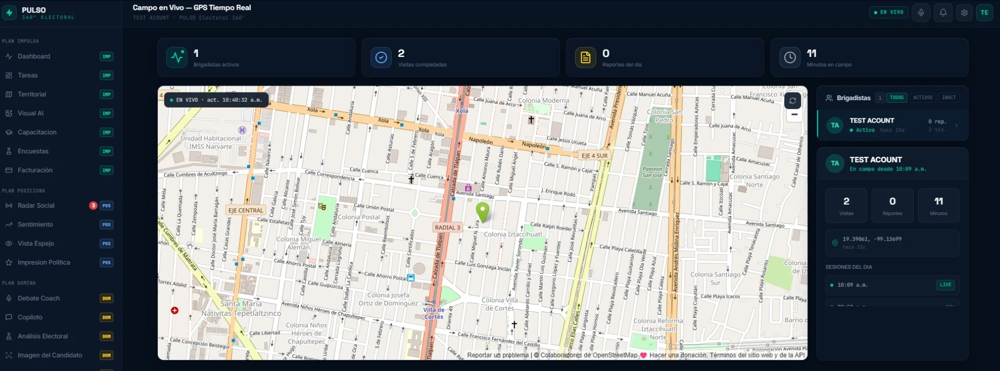

Inteligencia artificial al servicio de la estrategia electoral.
Mesa «Pulso electoral campañas 360 (IA)»Jueves 26 de noviembre de 202617:00 · Salón Caza B
Clic o → para comenzar · F pantalla completa · H ayuda
Ponentes
EC
Consultor en Inteligencia Artificial
Mtro. Eduardo Contró
Desarrollador de PULSO 360°
GC
Gloria Citlali Pérez CobosMarketing político
JV
Dr. José Enrique Vallarta RodríguezMarco legal electoral
JV
Juan Vasquez ComenaresSemblanza por integrar
Ruta de la sesión
Tres actos, una sola plataforma.
01
El cambio
De la plaza pública al panel digital.
02
PULSO 360°
La plataforma, panel por panel.
03
Confianza y futuro
Marco legal, cierre y demo en vivo.
Inteligencia artificial
La IA ya está en la campaña.
Analiza comportamientos, identifica patrones y anticipa tendencias a una escala sin precedentes.
Ayer
Hablar a muchos.
Mítines
Impresos
Televisión
Radio
Espectaculares
Recorridos
Un mensaje, en una sola dirección: el ciudadano solo recibía.
Después
Conversar en muchas pantallas.
facebook
Instagram
YouTube
12:48
4:05
8:21
Para ti
¿Y el transporte en mi colonia?
Me gusta la propuesta
¿Cuándo vienen a mi barrio?
Recreaciones de feed
Hoy
Todo en un solo panel.
PULSO 360° · Panel Integral de campañaEN VIVO
México conectado
0 millones
de personas usaron internet en 2025.
0%
de la población de 6 años y más.
0%
se conectó con un teléfono inteligente.
Información que una campaña necesita comprender.
INEGI, ENDUTIH 2025 · publicada el 16 de junio de 2026 · Dato nacional: no equivale al padrón electoral ni al alcance de una plataforma
Redes sociales en México
Las redes son la nueva plaza pública.
0%
usa redes para enterarse de asuntos del país.
0%
las usa para enterarse de lo que pasa en su colonia.
INE, ENCCyDE 2025 (febrero 2026)
Cuenta activa declarada · 2026Internautas urbanos
WhatsApp0
Facebook0
YouTube0
TikTok0
Instagram0
X0
Telegram0
Asociación de Internet MX, Estudio de Hábitos 2026 · panel online urbano de 1,200 adultos · respuestas múltiples
Redes y elecciones
0 millones
de electores siguieron información política en redes en 2024.
El 55% del electorado, sobre una lista nominal de 98.3 millones.
Uso electoral por plataforma · 2024
45.2 M46%
29.5 M30%
25.6 M26%
13.8 M14%
12.8 M13%
No se suman: una persona puede usar varias plataformas
CNEP México 2024 (A. Moreno) e INE, lista nominal 2024 · proyección propia: exposición informativa, no efecto sobre el voto
El nuevo electorado
No es un grupo homogéneo.
01
Diverso
Diferencias generacionales, económicas, educativas, culturales y territoriales.
02
Multicanal
Video breve y creadores para unos; televisión, radio y cara a cara para otros.
03
Digital ≠ social
Lo que pasa en redes no es toda la realidad: la tecnología complementa el trabajo de campo.
Casos documentados
La IA ya da resultados en México.
CrediclubAuditoría
0
reuniones analizadas en aproximadamente una hora.
En una campañaCada reunión termina en acuerdos y tareas con responsable.
BBVA MéxicoLegal
+0
consultas legales automatizadas al año.
En una campañaEl conocimiento del equipo, disponible cuando se necesita.
Coca-Cola FEMSADirección
−0%
de tiempo en briefings ejecutivos.
En una campañaUna síntesis diaria de pendientes y decisiones.
Casos publicados por Microsoft y OpenAI. No son resultados de PULSO 360°: muestran aplicaciones posibles.
En lo electoral
En México, ya está ocurriendo.
INE · InésAtención
0
conversaciones ciudadanas atendidas en 2023-2024.
LecciónCada consulta merece respuesta y seguimiento.
Signa_Lab ITESODebate 2024
0
preguntas ciudadanas procesadas con IA y revisión humana.
LecciónMiles de preguntas, ordenadas para decidir.
INE · DEPPPPropaganda
0
materiales de propaganda con uso de IA registrados en 2024.
LecciónProducir, revisar y conservar cada versión.
INE, Estrategia de Difusión 2023-2024 · Signa_Lab ITESO, abril 2024 · INE DEPPP, septiembre 2024
Lo que cambia con la IA
Cinco dimensiones del marketing político.
A
Inteligencia de mercado electoral
Necesidades y percepciones ciudadanas.
Sentimiento · Encuestas
B
Segmentación y personalización
Cada audiencia, su formato.
Copiloto IA
C
Producción de contenido
Más piezas, menos tiempo.
Visual AI
D
Reputación e inteligencia digital
Alertas antes de la crisis.
Vista Espejo
E
Optimización de recursos
Medir para decidir mejor.
Dashboard
Marketing político en la era de la IA · Marketing 5.0: tecnología al servicio de la estrategia
La plataforma
PULSO360° ELECTORAL
Una plataforma. Toda la campaña.
EscuchaProduceMoviliza
Cuatro planes
Así se organiza PULSO 360°.
IMPULSA
Organiza
Dashboard
Tareas
Visual AI
Capacitación
Facturación
Pagos
POSICIONA
Escucha
Radar Social
Sentimiento
Vista Espejo
Impresión Política
DOMINA
Decide
Debate Coach
Copiloto
Análisis Electoral
Imagen del Candidato
Comunidad
CAMPO
Moviliza
Brigadista
Campo en Vivo
Red de Casillas
Colaboradores
Paneles que veremos en esta sesión
Su procesador de IA
Tareas que PULSO 360° optimiza.
Diseño y edición
Asesor de imagen
Consultor político
No sustituye a las personas expertas en cada materia: funciona como su apoyo.
PULSO 360° · Contenidos visualesEN VIVO
E-cardGIF animadoCaricaturaLogotipo
Diseño con IA, en minutos.
“La creatividad debe estar en manos del equipo.”
Ingeniería de prompts
PROMPTS
Con buenas instrucciones, la IA diseña elementos gráficos de calidad.
Ingeniería de prompts
Anatomía de un buen prompt.
Prompt · ejemplo resumido
Diseña una e-card de bienvenida horizontal, formato 16:9, calidad 8K,para recibir a quienes ven una presentación en vivo; debe transmitir cercanía, entusiasmo e innovación.Fondo azul noche profundo, degradados suaves y formas fluidas en turquesa.Coloca únicamente estos textos: “¡Qué gusto tenerles aquí!” y “Gracias por acompañarnos.”Sin logos, marcas de agua ni texto adicional.
FormatoObjetivo y tonoEstilo visualTexto exactoRestricciones
Resultado · Visual AI
Hecho con Visual AI
Cuatro prompts, cuatro resultados.
16:9 · 8K
E-card de bienvenida
“Fondo azul noche y formas fluidas en turquesa.”
4 fotogramas · bucle
GIF animado
“Ondas suaves y una luz que sube y baja.”

Estilo editorial
Caricatura
“Un robot asistente imita el saludo del presentador.”
Vectorial · un color
Logotipo PULSO 360°
“Un pulso estilizado dentro de una órbita.”
Resultados generados en el panel Visual AI de PULSO 360° · cada pieza se revisa antes de publicarse
Impulsa · Visual AI
Una entrevista. Ocho entregables.
20:00
Entrevista
Video resumen1
Clips breves3
Carrusel1
Boletín1
Publicación de texto1
Ficha de argumentos1
Escenario ilustrativo · cada pieza requiere edición y revisión antes de publicarse
Productividad
Más capacidad para el equipo.
−0%de tiempo en tareas de escritura
+0%de calidad en el resultado
Experimento con 453 profesionales · Noy y Zhang, Science (2023)
Tiempo recuperadoEscenario ilustrativo
0 h/mes
Un equipo de 5 personas que recupera 30 minutos diarios durante 22 días.
POSICIONARadar Social · Sentimiento
La reputación cambia en horas.
PULSO 360° · Radar de sentimientoEN VIVO
Captura · Radar de sentimiento
PULSO 360° · Impresión PolíticaEN VIVO
Video · Impresión Política
Ejercicio de análisis
DT
Análisis principalDonald TrumpPresidente de Estados Unidos (2025–2029)
EM
Análisis secundarioEmmanuel MacronPresidente de la República Francesa (2022–2027)
Ensaya. Mide. Mejora.
1Elige el modo: analizar o simular en vivo con IA2Carga la transcripción o el video
PULSO 360° · Debate CoachEN VIVO
Captura · Modos: análisis o simulador en vivo
PULSO 360° · Debate CoachEN VIVO

Captura · Cargar transcripción o video
PULSO 360° · Imagen del CandidatoEN VIVO
Video · Imagen del Candidato
Ejercicio de análisis
GN
Análisis de imagenGavin NewsomGobernador de California, Estados Unidos (2023–2027)
La IA sugiere. El equipo decide.
ResumeEscucha, encuestas y campo.
SugiereFormatos, canales y momentos.
PriorizaRecursos y agenda.
Copiloto IA Asistente estratégico
Escucha · Encuestas · Campo
¿Qué preocupa más a los jóvenes de la zona oriente y cómo explico nuestra propuesta de empleo?
COPILOTO
Temas: empleo formal, transporte nocturno y seguridad.
Formato: video vertical de 45 segundos y una infografía con metas medibles.
Antes de publicar: validar con la encuesta de campo de esta semana.
Vista conceptual · conversación de ejemploLa IA sugiere · el equipo decide
Monitoreo por GPS, en tiempo real.
Al activar el monitoreo, cada brigadista aparece en el mapa.
Cobertura nacional
PULSO 360° · Campo en VivoEN VIVO

Brigadistas activos
Visitas completadas
Reportes e incidencias
Tiempo en campo
Un reporte, en tres pasos.
01
Captura · Descripción del problema
Describe el problema
02
Captura · Tipo de problema
Elige el tipo
03
Captura · Foto opcional
Agrega una foto (opcional)
Procesamiento centralizadoTodos los reportes llegan a un solo panel.
Desinformación
Datos objetivos contra la desinformación.
MediosTV, radio y prensa
Redes socialesTodas las plataformas
Datos públicosFuentes oficiales
Panel PULSO 360°
Analiza la presencia en medios y redes de forma objetiva.
Sin sesgosTodas las fuentesTodos los enfoques
Verificable
Difundir
Rumor
Verificar
Coordinado
Documentar
Marco legal
PULSO 360° cumple con el marco legal.
Constitución, LGIPE, fiscalización, datos personales y protección de la niñez.
Marco legal · por tema
Cuatro frentes, un solo respaldo.
Propaganda electoral
Gasto de campaña
Contenido y datos
Niñas, niños y adolescentes
LGIPE · arts. 242, 247 y 251 · Constitución, arts. 41 y 134
¿Se puede publicar en esa fecha y por ese medio?
Cada pieza conserva fecha, medio y versión final.
Reglamento de Fiscalización del INE
Si la campaña paga producción o pauta, se comprueba.
Soporte de producción y pauta, listo para comprobar.
LGIPE, art. 471.2 · Ley General de Protección de Datos Personales
Nada de atribuciones falsas; bases con origen y consentimiento.
Origen de los datos y uso permitido, documentados.
INE/CG527/2026 · SUP-RAP-214/2026
Si aparecen menores, autorizaciones antes de publicar.
Origen y autorizaciones validados.
Corte de revisión jurídica: 12 de noviembre de 2026 · Análisis: Dr. José Enrique Vallarta Rodríguez
Flujo de aprobación
Antes de publicar, tres verificaciones.
Integradas en el flujo de PULSO 360°: cada pieza sale con respaldo.
01 · HECHOS
¿Qué afirma?
Hechos verificados; voces e imágenes revisadas.
02 · DATOS
¿Con qué datos?
Origen anotado y uso permitido.
03 · AUTORIZACIÓN
¿Quién la autorizó?
Versión final, autorizaciones y gasto, conservados.
El marketing político del futuro
De vender candidatos a construir confianza.
01
Inteligencia estratégica
Decidir con información verificable.
02
Autenticidad y reputación
La congruencia vale más que nunca.
03
Comunicación ciudadana
Del monólogo al diálogo.
04
Ética y responsabilidad
Protocolos para usar la IA con respaldo.
Para reflexionar
¿Quién tiene hoy más posibilidades de ganar una campaña?
El que tiene más espectaculares
El que tiene más seguidores
El que tiene la mejor información
Ninguno, necesariamente.
Gana quien entiende mejor a la sociedad, administra mejor sus recursos y decide con información, a mayor velocidad.
Conclusión
La tecnología puede construir el mensaje.
La confianza ciudadana sigue siendo el verdadero capital de la democracia.
VOTO
¿Quieres conocer más de PULSO 360°?
Agenda tu demo en vivo.
Demo en vivo
Mira PULSO 360° funcionando.
Agenda una demostración en vivo para tu equipo de campaña.
EN VIVO
Código QR por integrar
Agenda tu demoAgenda por WhatsApp
Código QR por integrar
Agenda tu demoAgenda por WhatsApp
PULSO360° ELECTORAL
Gracias.
Sesión de preguntas
Mtro. Eduardo Contró
Gloria Citlali Pérez Cobos
Dr. José Enrique Vallarta Rodríguez
Juan Vasquez Comenares
Cifras y casos
INEGI. ENDUTIH 2025, 16 de junio de 2026 · INE. ENCCyDE 2025, febrero de 2026.
Asociación de Internet MX. Estudio de Hábitos de los Usuarios de Internet 2026.
CNEP México 2024 · Moreno, A. El Financiero, 18 de octubre de 2024 · INE, Listas Nominales, 30 de abril de 2024.
Noy, S. y Zhang, W. (2023). Science, 381, 187-192.
OpenAI, The State of Enterprise AI 2025 · Microsoft Customer Stories: Crediclub; Coca-Cola FEMSA.
INE, Estrategia de Difusión 2023-2024 (Inés) · INE DEPPP, 2024 · Signa_Lab ITESO, 2024.
Marco normativo y bibliografía
Constitución, arts. 41 y 134 · LGIPE, arts. 242, 247, 251 y 471.2 · Reglamento de Fiscalización del INE.
Ley General de Protección de Datos Personales en Posesión de Sujetos Obligados.
INE/CG527/2026 · TEPJF, SUP-RAP-214/2026 · Corte de revisión: 12 de noviembre de 2026.


 Resultado · Visual AI
Resultado · Visual AI Captura · Radar de sentimiento
Captura · Radar de sentimiento Captura · Modos: análisis o simulador en vivo
Captura · Modos: análisis o simulador en vivo Captura · Descripción del problema
Captura · Descripción del problema Captura · Tipo de problema
Captura · Tipo de problema Captura · Foto opcional
Captura · Foto opcional